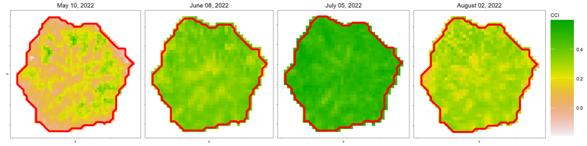

Chapter 4 Photogrametric Processing
Figure @ref(fig: aligned-agisoft)
Figure 4.1: A dense point cloud processed in Agisoft Metashape with the camera locations turned on and disabled flight trajectories shown.

Figure 4.2: Recommended Metashape preferences setup under the Advanced tab.

Figure 4.3: Calibrate reflectance tool found under Tools in Metashape.
Figure 4.4: Calibrate reflectance tool found under Tools in Metashape with sun sensor and reflectance panels enabled for calibration.

Figure 4.5: Photogrametric camera alignment settings using the alignment tool in Metashape

Figure 4.6: Sparse cloud created in image alignment. Pink points are those selected by the Gradual Selection tool that have a reconstruction uncertainty greater than or equal to 30.4608. These points will be filtered out.

Figure 4.7: Settings used for the Optimize Camera Alignment tool
Figure 4.8: Settings used for point based chunk alignment when aligning the multispectral data to the P1.
![Visual of the [T] that will appear next to chunks that have successfully aligned via chunk alignment. The [T] stands for transposed, visual inspection of alignment at all four corners and the center of the plot should be done to ensure the error in the alignment is within an acceptable range. We have had sites complete alignment 'successfully' however with large, unacceptable error that required alignment using GCPs.](Photos_&_gifs/transposed_metashape.png)
Figure 4.9: Visual of the [T] that will appear next to chunks that have successfully aligned via chunk alignment. The [T] stands for transposed, visual inspection of alignment at all four corners and the center of the plot should be done to ensure the error in the alignment is within an acceptable range. We have had sites complete alignment ‘successfully’ however with large, unacceptable error that required alignment using GCPs.
Figure 4.10: Metashape settings for building the depth maps and the dense cloud.

Figure 4.11: Metashape settings for DEM generation.

Figure 4.12: Metashape settings for building the orthomosaic.

Figure 4.13: Raster calculator tool in Metashape to look at reflectance values of trees for band 1 (Blue - 444nm) prior to exporting the orthomosaic.

Figure 4.14: Reflectance values of trees for band 4 (Green - 560nm).

Figure 4.15: Reflectance values of trees for band 10 (NIR - 842nm).
Figure 4.16: The spreadsheet map of the layout of the site, each tree is located on a grid with a unique row and column value assigned to it.

Figure 4.17: P1 orthomosaic of the site with GCPs and georeferenced trees marked with red dots
Figure 4.18: Visual of the Grid Georeferenced plugin in QGIS.


Figure 4.19: Left: treeID 1, reference for the bottom left corner of the plot. Right: treeID 2757, reference for the top right of the plot


Figure 4.20: Right: zoom in on vector layer and place a point on the Map Canvas

Figure 4.21: Zoomed in visual of the georeferenced tree grid for 6 trees overlain on the P1 orthomosaic.

Figure 4.22: Georeferenced grid overlain on P1 orthomosaic for a site that was well maintained. The georeferenced grid has been snapped to the highest point on the CHM within a given radius to pull the grid to the treetops.
4.2 Shadow Masks
Pixels containing shadows and openings in the canopy can introduce error in vegetation indices as reflectance values are often lower in shaded pixels (Malenovský et al., 2013; Zhang et al., 2024). Masking out shaded pixels and openings within the crown is necessary to calculate accurate vegetation indices. We found masking with NIR reflectance to be a consistent and effective approach for masking out shadows and gaps. We use the NIR reflectance band (842nm) from the Micasense RedEgde-MX Dual. NIR thresholds are determined using the shape of the NIR distribution. If the NIR distribution is bimodal, the threshold is set to the local minimum, whereas if the distribution is unimodal, the threshold is set to the local maximum (Chen et al., 2007; D’Odorico et al., 2021; Otsu et al., 2019).
Below we define a function find_local_min that takes a list of first derivatives and returns a dataframe containing:
neg_value: The value of the first derivative directly before the minimum (i.e. the negative derivative value to the left of the minimum)
pos_value: The value of the first derivative directly after the minimum (i.e. the positive derivative value to the right of the minimum)
pos_def: The summation of the positive gradient values (a.k.a. slope values) in the first 15 gradient values following the local minimum. This value provides an idea of how great the increase in slope is after the local minimum.
neg_def: The summation of the negative gradient values in the first 15 gradient values preceding the local minimum. This value provides an idea of how great the decrease in slope is before the local minimum.
Index: Index position of the negative gradient value bordering the local minimum. This is the index of our threshold value since we do not get a true zero slope value at the local minimum but rather a change from a very small negative gradient value to a very small positive gradient value.
definition: The summation of the absolute value of pos_def and neg_def values. The greater this number, the more defined the minimum. The above parameters were added to describe each minimum found by the function so that the true local minimum could be filtered for.
This function will be used in the next few steps to isolate minimums in the NIR distribution.
# This function finds local minimums and ranks how defined they are by the 'definition' attribute
find_local_min <- function(values) { #input "values" is a list of 1st derivatives of NIR values
#initializing variables
neg_slope <- numeric()
pos_slope <- numeric()
index_of_closest <- numeric()
definition = numeric()
neg_sum = numeric()
pos_sum = numeric()
k <- 1 #initializing iterator
for (i in 2:length(values)) { #skip index 1 so following "values[i-1]..." can properly index
#print(i)
if (values[i - 1] < 0 & values[i] >= 0 & i > 15) {
#finds a change from negative to positive 1st derivative (local min)
#i>15 because local min will not be in first 15 values and this stops an error occurring where a local min is found in the first 15 values and the def_positive indexing does not work
def_positive <- c(values[i:(i+15)]) # vector of next 15 gradient values
def_pos <- def_positive[def_positive > 0] #only taking positive 1st derivative values (aka positive slopes)
pos_sum[k] <- sum(def_pos) #adding up the positive 1st derivative values
def_negative <- c(values[(i - 15):i]) # vector of the 15 values to the left of the local min (negative 1st derivatives)
def_neg <- def_negative[def_negative < 0] #only taking the negative slopes in the list
neg_sum[k] <- sum(def_neg) #adding up negative values
neg_slope[k] <- values[i - 1] #1st derivative value at i-1 (right before sign change from neg to pos)
pos_slope[k] <- values[i] #1st derivative at i (at the switch from neg to positive)
index_of_closest[k] <- i - 1 #index value of the last neg 1st derivative before the local min
definition[k] <- sum(abs(def_neg), abs(def_pos)) # higher the value, more pronounced the local min
k <- k + 1
}
}
return(data.frame(neg_value = neg_slope, pos_value = pos_slope, Index = index_of_closest, definition = definition, neg_def = neg_sum, pos_def = pos_sum))
}To begin, we load the necessary packages, the multispectral orthomosaic that contains the NIR (842nm) band, and the delineated crowns shapefile and create the folder where the shadow mask will be saved to:
#Required Packages
library(ggplot2) # to plot
library(terra) # to work with the orthomosaics (rasters)
library(dplyr) #for data manipulation
library(tidyverse) # for data manipulation
library(sf) # to work with the delineated crown polygons
library(pracma) # for gradient/ derivative function
library(LaplacesDemon) # is.multimodal function
# Setting directory
dir = "Change to match your folder strucutre" #directory where shadow mask folder will be made. This dir is also used in path names for the orhtomosaics. Change up paths throughout the code to call your data.
# Reading in the multispectral orthomosaic
ms_temp = rast(list.files(paste0(dir, "metashape\\3_MS_ORTHO\\"), pattern = ".*MS_Calibrated.*_bestPanel.tif$", full.names = TRUE)) # here we read in the ortho that is in the set directory and contains "MS_Calibrated" in the name and end in "_bestPanel.tif". We had multiple orthos in this folder, so did this to ensure the proper one was called. Change to match your ortho name, or remove the pattern if you only have one ortho in the defined path.
# Reading in the shapefile containing delineated crowns and buffering inward by 5cm to limit any mixed pixels from neighboring vegetation
dir_crowns <- "D:\\Sync\\Fdc_PR_Canoe\\Crowns.shp" #path to crowns shapefile
pols_spat = st_read(paste0(dir_crowns)) %>% # reading in crown shp
filter(!st_is_empty(.)) %>% #removing empty
st_buffer(dist = -.05) %>% #buffering inward by 5cm
vect()
# Creating a folder for shadow masks
Nir_shadow_folder_baseName <- "NIR_shadow_mask_localMinOrMax" #name of the folder shadow masks will be written to. We have the folder name defined outside the folder creation step below so that we could change the folder name once without having to change it throughout the code.
if (!dir.exists(paste0(dir, Nir_shadow_folder_baseName,"\\"))) {
dir.create(paste0(dir,Nir_shadow_folder_baseName,"\\"))
}Next, the NIR band is selected from the multispectral orthomosaic. Here you can choose to:
Crop the mulispectral othomosaic to the extent of the crowns shapefile. We have found this to be a good option for mature sites with minimal exposed ground.
Mask the mulispectral othomosaic to the individual crowns. We have found this to be a good option for younger sites with lots of ground exposure.
Below we crop the raster to the extent of the polygons and reformat from a raster to a vector of values:
#Create a vector of near-infrared (NIR) values from the 10th multispectral band (842nm)
NIR = ms_temp[[10]] %>% #isolating the NIR (842nm) band
crop(pols_spat) %>% #cropping to the extent of the crown polygon shp
clamp(upper = 50000, values = FALSE) %>%
as.vector()Density of the NIR values is calculated and plotted, after removing NA values.
NIR_na <- na.omit(NIR) #remove NA values from the NIR vector
density_values <- density(NIR_na) # calculates density of NIR values
# Plot to see the distribution of NIR values
plot(density_values) # check to see the distribution of NIR values (ie a visual check for whether or not a local min exists)At this point the threshold can be estimated manually from the graph however, this is not a feasible method when you have many data acquisitions, nor is it the most accurate method. Below we describe the method we used to create shadow masks for many acquisitions withouth having to visually inspect the NIR distributions. To computationally find the threshold we first need to decipher whether the NIR distribution is unimodal (one peak) or multimodal (more than one peak). To do so we use the is.multimodal function from the LaplacesDemon package.
If the distribution was multimodal, we found the local minimum by:
calculating the first derivatives fo the NIR density values and storing the derivatives in dy_dt
applying the find_local_min function to the list of first derivatives to find minimums
filtering out small minimums that are not true minimums but rather dips on a larger slope
Identifying false multimodals and assigning the threshold value to be the local maximum
Identifying the largest minimum (a.k.a. the local minimum) and setting that as the threshold value
If the distribution was not multimodal (and therefore unimodal), we found the local maximum by:
- locating the NIR value that corresponds to the greatest density of values in the NIR distribution
Note: for each method there are mode and thresh_name variables defined. These variables are used to annotate the histrogram made in the next step
if(is.multimodal(NIR_na)){ # if the NIR distribution is multimodal, continue to the below steps
dy_dt <- pracma::gradient(density_values$y) #list of first derivatives of NIR vector
zeros <- find_local_min(dy_dt) # Finds index locations where slope switches from neg to post (local min) and ranks the intensity of each local min
zeros_filtered <- zeros[(zeros$pos_def > 0),] # Filters rows with pos_def > 0, filtering out small minimums on negative slopes (not true local mins)
if(nrow(zeros_filtered)==0){#if empty, then detected a false multimodal distribution and defaulting to max as threshold value
print("It is a false multimodal")
max_density = max(density_values$y, na.rm = TRUE)
threshold = density_values$x[which(density_values$y == max_density)]
mode <- "Unimodal (False Multi)"
thresh_name <- "LocalMax"
}else{
zeros_local_min <- zeros_filtered[which.max(zeros_filtered$definition), ] #isolating the largest local min
# x_zeros <- density_values$x[zeros_local_min$Index] #selecting NIR (aka x_mid) value that corresponds to the index value of the most defined local min
threshold <- density_values$x[zeros_local_min$Index] #selecting NIR (aka x_mid) value that corresponds to the index value of the most defined local min
# Catching cases of "inf" returns:
if (threshold <= 0.7 & threshold > 0){#setting limits on the threshold to remove any thresholds from the tails of the distribution
print(threshold)
mode <- "Multimodal"
thresh_name <- "LocalMin"
}else{
print("Multimodal with org thresh > 0.7") #This output usually indicates an error in the function, make sure to look at the NIR distribution to confirm this is in fact correct or if the code needs modification for a special case
#This often indicates a false multimodal as well, and therefore the NIR value with the max frequency in the NIR distribution with be used as the threshold
max_density = max(density_values$y, na.rm = TRUE)
threshold = density_values$x[which(density_values$y == max_density)]
mode <- "Unimodal (False Multi with org thresh > 0.7)"
thresh_name <- "LocalMax"
}
}
}else{ #if the NIR vector is NOT multimodal, continue to the below steps
#Finding NIR value with the greatest frequency in the distribution - this max value will be the threshold for unimodal distributions
max_density = max(density_values$y, na.rm = TRUE)
threshold = density_values$x[which(density_values$y == max_density)]
print(threshold)
thresh_name <- "LocalMax"
mode <- "Unimodal"
}Next, we plot a histogram of the NIR values and annotate it to contain:
a vertical line at the threshold
the threshold value
the mode (i.e. unimodal verse mulitmodal)
(hist = NIR %>% #plotting a histogram of NIR values with a vertical red line for the defined threshold value
as_tibble() %>%
ggplot() +
geom_histogram(aes(x = NIR), bins = 150) +
geom_vline(xintercept = threshold, color = "red3") +
labs(title = paste0(mode, " , threshold: ",round(threshold, digits = 2)))+
theme_bw()+
theme(panel.grid.major = element_blank(),
panel.grid.minor = element_blank(),
plot.title = element_text(size = 13,hjust = 0.75, vjust = -28)))
ggsave(hist, #saving out the plot
filename = paste0(dir, Nir_shadow_folder_baseName,"\\", date_list[x], "_NIR_shadow_hist_localMin_orMax.jpeg"),
device = jpeg,
width = 8,
height = 8)We then isolate the NIR band from the multispectral orthomosaic and filter the raster to set pixels with NIR values greater than the threshold to NA and those that are less than or equal to the threshold to 1.
shadow_mask = ms_temp[[10]] #isolating the NIR band of the multispectral ortho
shadow_mask[shadow_mask > threshold] = NA #for NIR values > threshold, make them NA
shadow_mask[shadow_mask <= threshold] = 1 #for NIR values < or = to the threshold value, make them 1
# Writing out the shadow mask that has values of 1 for all pixels that will be masked out
terra::writeRaster(shadow_mask, paste0(dir, Nir_shadow_folder_baseName,"\\", date_list[x], "_NIR_shadow_thresh",threshold ,"_",thresh_name, ".tif"),
overwrite = TRUE)
Lastly, we apply the clump function to group adjacent pixels that represent shadows creating “clumps” a.k.a. shadow patches. These shadow patches are then converted into a dataframe containing a unique ID per shadow patch and the number of pixels within each patch.
# Grouping adjacent pixels with the same value (i.e. representing shadowed areas) into distinct patches or clumps
shadow_patches = raster::clump(raster::raster(shadow_mask), directions = 4) %>%
rast()
# Summarizing the clumps obtained from the shadow patches raster. It contains two columns:
#1. value: representing the unique ID of each clump:
#2. count: representing the number of pixels within each clump
clumps = data.frame(freq(shadow_patches))Here we filter the shadow patches by a threshold to remove insignificant patches and write out the cleaned shadow mask for future use.
The threshold num_pix is calculated by:
setting an initial area threshold of 0.02m^2 (200cm^2)
dividing the 0.02m^2 threshold by the area of a pixel to determine the threshold number of pixels a shadow patch must have to not be filtered out
In our case, the resolution of the raster was just over ~3cm, giving us a threshold of ~23 pixels.
# Calculating the threshold for the number of pixels that a clump must contain to be considered significant
# It is calculated based on the desired area threshold (200 cm²) divided by the area of a single pixel
num_pix = 0.02 / (res(shadow_patches)[1]^2) #0.02 represents 200cm² in meters
flecks = clumps[clumps$count > num_pix,] # remove clump observations with frequency smaller than the threshold
flecks = as.vector(flecks$value) # record IDs from clumps which met the criteria in previous step
new_mask = shadow_patches %in% flecks #keep clumps that have IDS in flecks
new_mask[new_mask == 0] = NA # make clumps that are zero, NA
#writing out a 'cleaned' shadow mask
terra::writeRaster(new_mask, paste0(dir, Nir_shadow_folder_baseName,"\\", date_list[x], "_NIR_shadow_thresh",threshold ,"_",thresh_name, "_mask2.tif"),
overwrite = TRUE)Below you can see that in this case the filter did not result in a large change in the shadow mask as there were minimal small patches to begin with. Here the white areas in the filtered mask image on the right are areas that will not be masked given that the mask did not contain enough pixels. This will result in a less patchy shadow mask.

4.3 Crown-level Vegetation Indicies
Vegetation indices (VIs) are important tools for near-real time monitoring and function as proxies for health, productivity, structural changes, and stress.
Below we describe a few commonly used VIs that will be calculated in this workflow:
Normalized Difference Vegetation Index (NDVI) is of the oldest vegetation indices established in vegetation monitoring and is used as a metric of greenness. However, due to saturation of the chlorophyll absorption peak around 660-680nm at moderately low chlorophyll levels, NDVI is often not able to tease out small differences between healthy plants (Sims & Gamon, 2002). To solve this issue, the red reflectance band can be replaced with a red edge reflectance band creating the normalized difference red edge index mentioned below.
Normalized Difference Red Edge index (NDRE) normalizes a reflectance band in the red edge to a reflectance band in the near-infrared region to estimate chlorophyll content. This index is a derivative of NDVI that is sensitive to shifts in chlorophyll content at high concentrations (Clevers & Gitelson, 2013; Evangelides & Nobajas, 2020).
Chlorophyll Carotenoid Index (CCI) is a proxy for the ratio of chlorophylls to carotenoids in pigment pools. It is often used as a metric for tracking the onset of the growing season and photosynthetic activity (Gamon et al., 2016).
Photochemical Reflectance Index (PRI) can be used as a proxy for xanthophyll pigment epoxidation or changes in bulk seasonal pigment pool ratios depending on the timescale of analysis. Over a scale of milliseconds to minutes PRI can isolate the photoprotective conversion of violaxanthin into antheraxanthin and zeaxanthin within the xanthophyll cycle by normalizing the 531nm reflectance band to the 560nm reference reflectance band. However, on the seasonal scale the 560nm reflectance band no longer acts as a reference for isolating changes in xanthophyll pigments since it changes with bulk pigment shifts. Hence, seasonal PRI meaurments are instead used as another proxy for the ratio of carotenoid to chlorophyll pigments and are used to show changes in photosynthetic activity (Wong et al., 2020).
Red Edge (RE) slope captures changes in chlorophyl content and structural health. Steep RE slopes generally indicate healthy vegetation while more gradual slopes often indicate stressed vegetation. This is due to the base of the RE slope sitting around a main chlorophyll absorption peak and the end of the RE slope sitting near the near-infrared (NIR) range. Hence, the more chlorophyll the lower the reflectance around the base of the RE slope and the greater the reflectance in the NIR, often attributed to healthy vegetative material, the steeper the overall slope of the RE (Sims and Gamon, 2002, Clevers and Gitelson)
Green Chromatic Cordinate (GCC) is a measure of green reflectance relative to the total reflectance in the visible light portion on the electromagnetic spectrum. It is a metric of greeness that is often used as a proxy for vegetation health (Reid et al., 2016).
4.3.1 VI Workflow
Below are code chunks that take the delineated crowns and multispectral orthomosaics and output a .rds file containing several popular vegetation indices at the crown-level. In this script we demonstrate how to calculate both mean and median values of vegetation indices per crown.
We begin by loading the necessary packages:
library(terra) # to work with the orthomosaics (rasters)
library(dplyr) #for data manipulation
library(tidyverse) # for data manipulation
library(sf) # to work with the delineated crown polygons
library(exactextractr) # for the exact_extract functionNext, we read in the mulispectral orthomosaic and shadow mask. The shadow mask will work to remove shadowed pixels so they do not skew the values for the vegetation indices. See the section on shadow masks for a detailed workflow.
# Load in multispectral orthomosaic
ms_ortho = rast(list.files(paste0(dir, "metashape\\3_MS_ORTHO\\"), pattern = ".*MS_Calibrated.*_bestPanel.tif$", full.names = TRUE)) #path to multispectral ortho
# Reading in the NIR shadow mask
shadow_mask = rast(list.files(paste0(dir, Nir_shadow_folder,"\\"), pattern = ".*_NIR_shadow.*_thresh.*_mask2.tif$", full.names = TRUE))# NIR shadow mask
# Below selects the root name of the multispectral ortho ie: "Name_of_multispectral_ortho" that will be used to name the multispectral shadow masked orthos created in the following steps
ms_ortho_name_root <- substr(names(ms_ortho)[1], 1, nchar(names(ms_ortho)[1]) - 2)
#names(ms_ortho)[1] grabs the name for band 1 of the ms_ortho: ie: "Name_of_multispectral_ortho_1", so that the substr function can selection the rootname as done aboveTo speed up processing, we mask the shadow mask to only contain areas inside delineated crowns.
The shadow mask is a raster containing values 1 (shadowed pixel) and NA (not shadowed pixel). The mask function below identifies pixels in the multispectral orthomosaic that align with shadowed pixels in the shadow mask and changes their value to NA.
# Mask shadow mask to delineated crowns:
shadow_mask <- terra::mask(shadow_mask, pols)
# Mask the multispectral ortho using the shadow mask
ms_mask <- terra::mask(ms_ortho, shadow_mask, maskvalues = 1, updatevalue = NA)
#writing out the shadow masked multispectral ortho
terra::writeRaster(ms_mask, paste0(dir, Nir_shadow_folder,"\\",ms_ortho_name_root,"_NirShadow_masked.tif"),
overwrite = TRUE)The shadow masked multispectral orthomosaic is then masked to the delineated crowns polygon to speed raster calculations in the next step.
# Mask shadow masked raster to delineated crowns
ms_mask <- terra::mask(ms_mask, pols)
# Write out the masked raster
terra::writeRaster(ms_mask, paste0(dir, Nir_shadow_folder,"\\",ms_ortho_name_root,"_NirShadow_ms_mask_to_pols.tif"),
overwrite = TRUE)Here we calculate several vegetation indices using the multispectral orthomosaic from above with shadowed pixels and non-crown pixels removed.
# List of band reflectances (R444 - R842) and index values that will be calculated per tree crown
rast_list = list(
# reflectance values
R444 = ms_mask[[1]],
R475 = ms_mask[[2]],
R531 = ms_mask[[3]],
R560 = ms_mask[[4]],
R650 = ms_mask[[5]],
R668 = ms_mask[[6]],
R705 = ms_mask[[7]],
R717 = ms_mask[[8]],
R740 = ms_mask[[9]],
R842 = ms_mask[[10]],
# Near-infrared greenness
mDatt = (ms_mask[[10]] - ms_mask[[8]]) / (ms_mask[[10]] - ms_mask[[6]]),
NDVI = (ms_mask[[10]] - ms_mask[[6]]) / (ms_mask[[10]] + ms_mask[[6]]),
# Chlorophyll
NDRE1 = (ms_mask[[10]] - ms_mask[[7]]) / (ms_mask[[10]] + ms_mask[[7]]),
NDRE2 = (ms_mask[[10]] - ms_mask[[8]]) / (ms_mask[[10]] + ms_mask[[8]]),
NDRE3 = (ms_mask[[10]] - ms_mask[[9]]) / (ms_mask[[10]] + ms_mask[[9]]),
EVI = (2.5 * (ms_mask[[10]] - ms_mask[[6]])) / (ms_mask[[10]] + (6 * ms_mask[[6]]) - ( 7.5 * ms_mask[[1]] + 1)),
GCC = (ms_mask[[4]]+ ms_mask[[3]]) / (ms_mask[[1]] + ms_mask[[2]] + ms_mask[[3]]+ms_mask[[4]] + ms_mask[[5]] + ms_mask[[6]]),
# Carotenoids, waxes
ARI = (1 / ms_mask[[4]]) - (1 / ms_mask[[7]]),
EWI9 = (ms_mask[[6]] - ms_mask[[8]]) / (ms_mask[[6]] + ms_mask[[8]]),
# Carotenoids
PRI = (ms_mask[[3]] - ms_mask[[4]]) / (ms_mask[[3]] + ms_mask[[4]]),
CCI = (ms_mask[[3]] - ms_mask[[5]]) / (ms_mask[[3]] + ms_mask[[5]]),
# Red edge
RE_upper = (ms_mask[[9]] - ms_mask[[8]]) / 23,
RE_lower = (ms_mask[[8]] - ms_mask[[7]]) / 12,
RE_total = (ms_mask[[9]] - ms_mask[[7]]) / 35
)
rast_all = rast(rast_list)Below is an example of the resolution of the calculated vegetation indices. The image shows the chlorophyll carotenoid index (CCI) of a single crown across four summer time points. Greener pixels represent a higher ratio of chlorophylls to carotenoids. As you can see, the proportion of the crown with high CCI values increases from the May to July acquisitions, when productivity is likely at its highest, and decreases during the august acquisition suggesting lower productivity, likely due to end of summer drought conditions.

Lastly, we use the exact_extract function to calculate crown-level statistics per vegetation index raster created above. Below we show an example of taking the mean and median crown values per index as well as count the number of pixels that were used for the index calculation. We do this as a data quality check so we can remove crowns that had very few pixels involved in their index calculation.
Note: the append_cols parameter should be set to a list of column names that exist in pols (the shapefile of delineated crowns) that you would like to be appended to the dataframe containing vegetation indcies per tree crown. As you can see below we have attached many columns we found useful, however the only column necessary to append is a column in pols that represents a unique ID per tree crown.
# Calculating Mean Index values per crown
df_spectral_mean = exact_extract(rast_all, pols, fun = "mean", append_cols = c("treeID","Edited","tag__","rep","blk","fam","fem"))
# Calculating the number of non-masked pixels used for index calculation
df_count = exact_extract(ms_mask[[1]], pols, fun = "count", progress = TRUE, append_cols = c("treeID","Edited","tag__","rep","blk","fam","fem"))
# Joining the mean index values df and the count values df
df_spectral_mean_count <- merge(df_spectral_mean,df_count, by = c("treeID","Edited","tag__","rep","blk","fam","fem"))
# Saving out mean crown values + non masked pixel count to an rds file
saveRDS(df_spectral_mean_count, paste0(dir_D,"\\",updated_metrics_folder,"\\", date_list[x], "_NIRshadowMask_MeanCrownSpectralIndices.rds"))
# Calculating Median Index values per crown
df_spectral_median = exact_extract(rast_all, pols, fun = "median", append_cols = c("treeID","Edited","tag__","rep","blk","fam","fem"))
df_spectral_median_count <- merge(df_spectral_median,df_count, by = c("treeID","Edited","tag__","rep","blk","fam","fem"))
# Saving out median crown values + non masked pixel count to an rds file
saveRDS(df_spectral_median_count, paste0(dir_D,"\\",updated_metrics_folder,"\\", date_list[x], "_NIRshadowMask_MedianCrownSpectralIndices.rds"))References:
Clevers, J. G. P. W., & Gitelson, A. A. (2013). Remote estimation of crop and grass chlorophyll and nitrogen content using red-edge bands on Sentinel-2 and -3. International Journal of Applied Earth Observation and Geoinformation, 23(1), 344–351. https://doi.org/10.1016/J.JAG.2012.10.008
Evangelides, C., & Nobajas, A. (2020). Red-Edge Normalised Difference Vegetation Index (NDVI705) from Sentinel-2 imagery to assess post-fire regeneration. Remote Sensing Applications: Society and Environment, 17, 100283. https://doi.org/10.1016/J.RSASE.2019.100283
Gamon, J. A., Huemmrich, K. F., Wong, C. Y. S., Ensminger, I., Garrity, S., Hollinger, D. Y., Noormets, A., & Peñuelask, J. (2016). A remotely sensed pigment index reveals photosynthetic phenology in evergreen conifers. Proceedings of the National Academy of Sciences of the United States of America, 113(46), 13087–13092. https://doi.org/10.1073/pnas.1606162113
Reid, A. M., Chapman, W. K., Prescott, C. E., & Nijland, W. (2016). Using excess greenness and green chromatic coordinate colour indices from aerial images to assess lodgepole pine vigour, mortality and disease occurrence. Forest Ecology and Management, 374, 146–153. https://doi.org/10.1016/J.FORECO.2016.05.006
Sims, D. A., & Gamon, J. A. (2002). Relationships between leaf pigment content and spectral reflectance across a wide range of species, leaf structures and developmental stages. Remote Sensing of Environment, 81(2–3), 337–354. https://doi.org/10.1016/S0034-4257(02)00010-X
Wong, C. Y. S., D’Odorico, P., Arain, M. A., & Ensminger, I. (2020). Tracking the phenology of photosynthesis using carotenoid-sensitive and near-infrared reflectance vegetation indices in a temperate evergreen and mixed deciduous forest. New Phytologist, 226(6). https://doi.org/10.1111/nph.16479